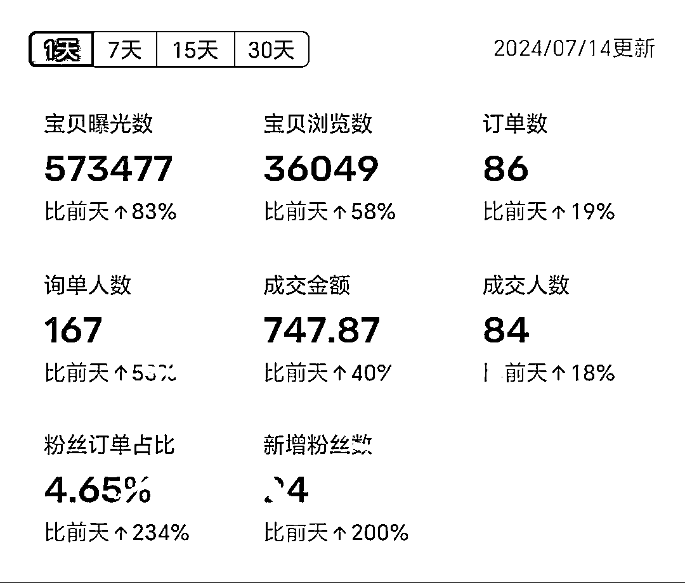
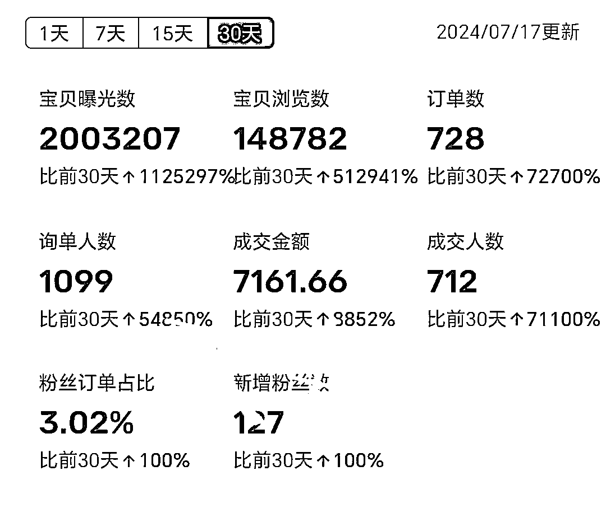
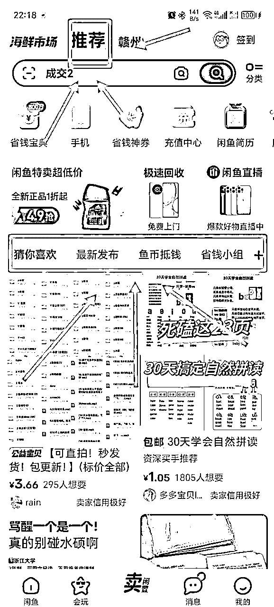
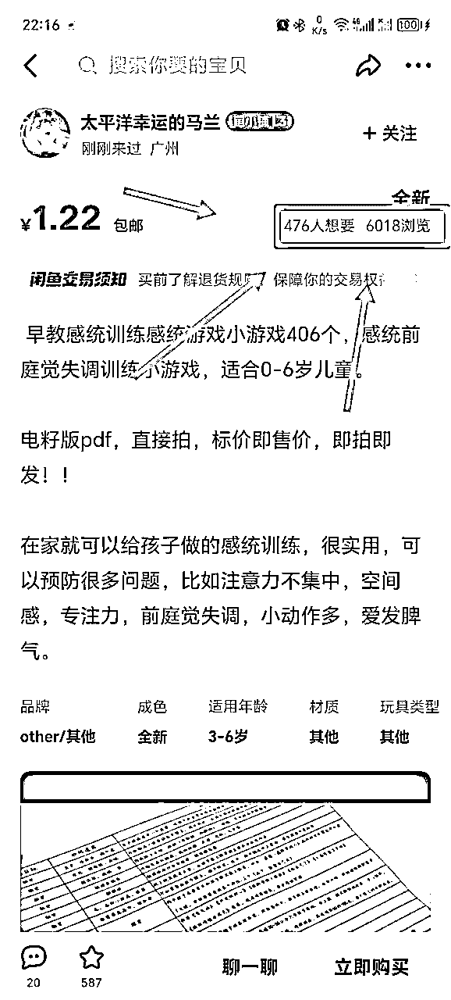
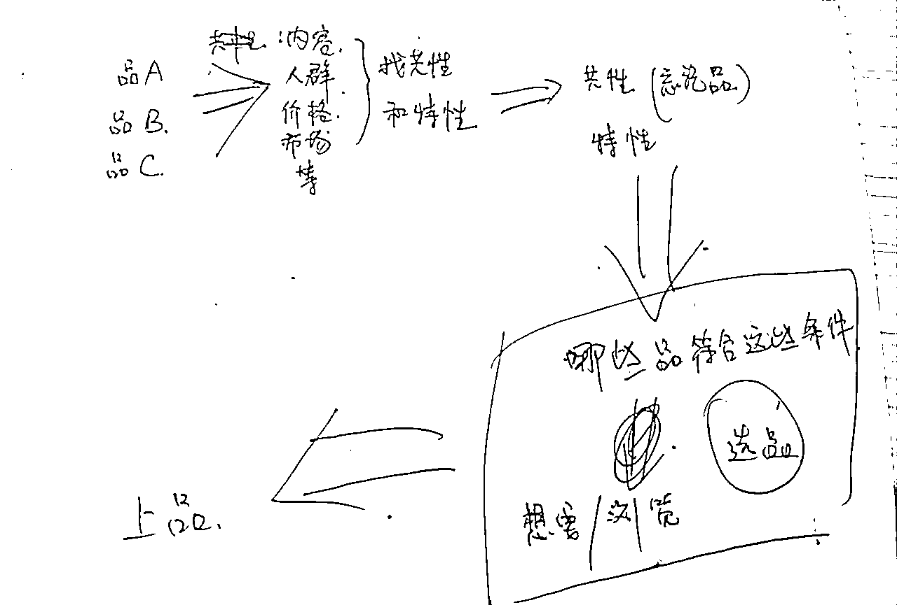
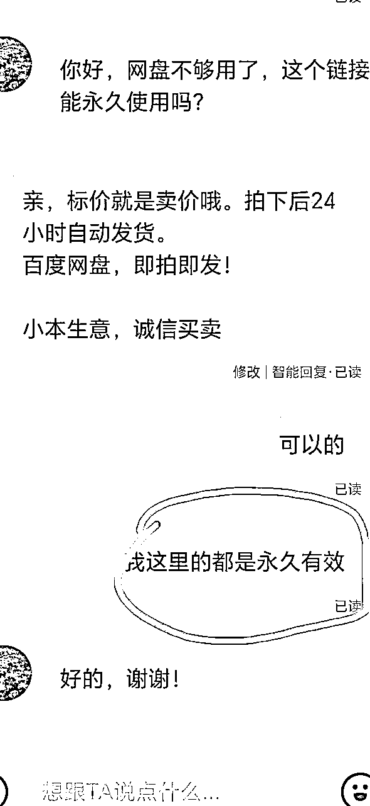
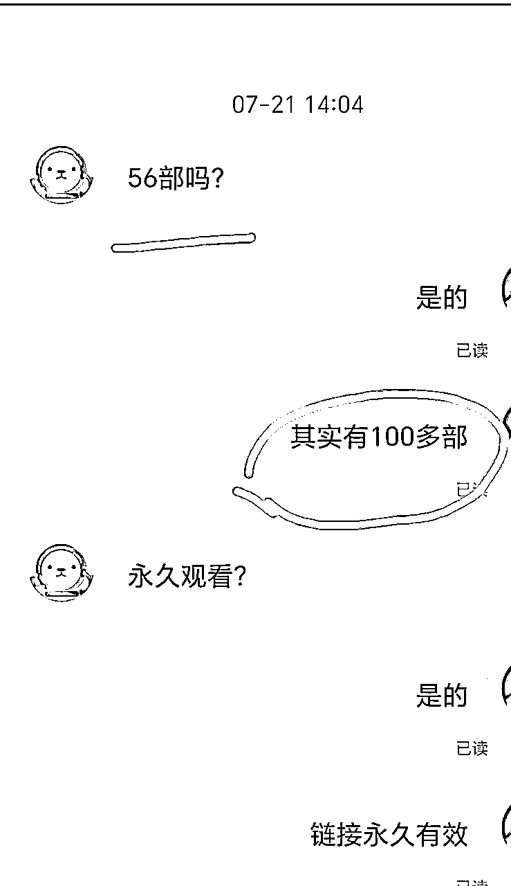
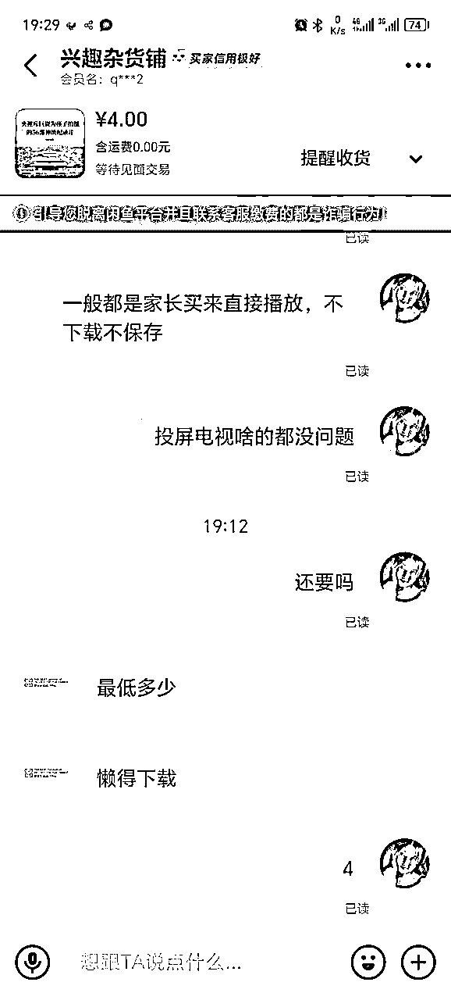

来源：https://wabqhwd11nx.feishu.cn/docx/Lx5NdGe6qoxu0txjidFcKciknkh
正文的开始，先秀下肌肉：




选品思路
我的思路很简单：找品A、B、C，分析它们的买家画像，找共性、特性然后表格列出来。再忘掉品A、B、C，分析这些共性和特性跟出单有什么关系！这些因素如果能影响出单，那么哪些品有这些性质/共性，然后再去闲鱼刷品，看想要/浏览，看同一个品不同的店是什么情况。附件手写思路图

为什么要做高客单？
只要出单就比低客单爽，只要小爆就200左右/日收入，大爆500+/日收入
方法很简单：


这个品的文案描述有56个内容，我回复有100多个（实际有200+个内容）。如果我不说实际内容可能这单就流了。
在成交之前，他以为只有56，但是事实是有200。你告诉他，就等于跟他说：快来占便宜，错过了我家下一家可没这么便宜。所以，说了和不说是有区别的

遇到买家砍价，不管什么理由，降价一点点就行，能成就成，成不了就不成。第一次降价太多了，就容易被砍第二次（案例品原价5.5）
希望大家永不内耗！天天运动！吃嘛嘛香！